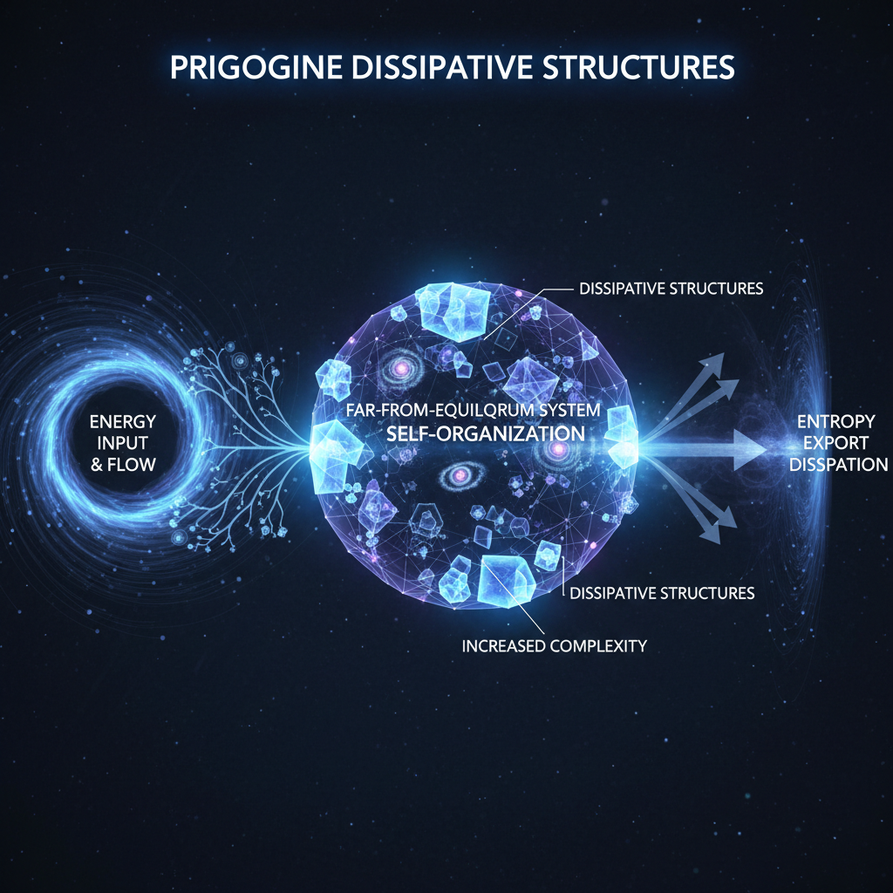
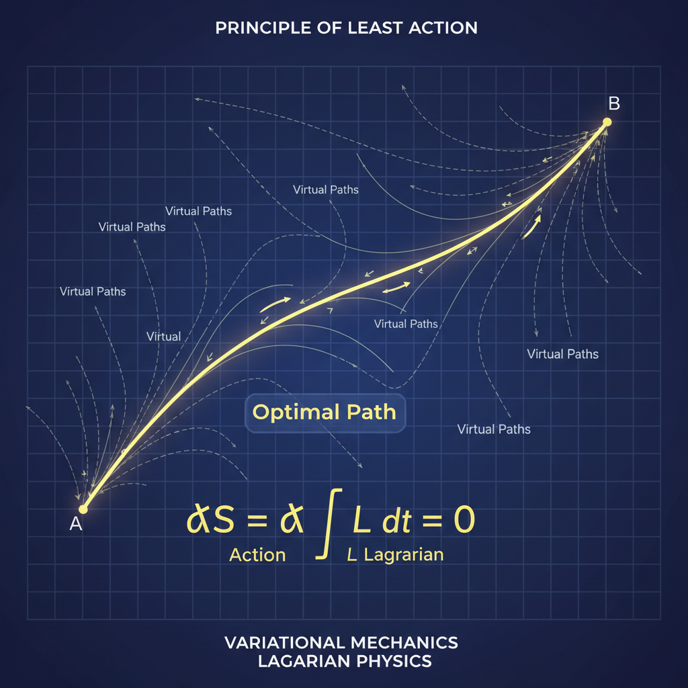
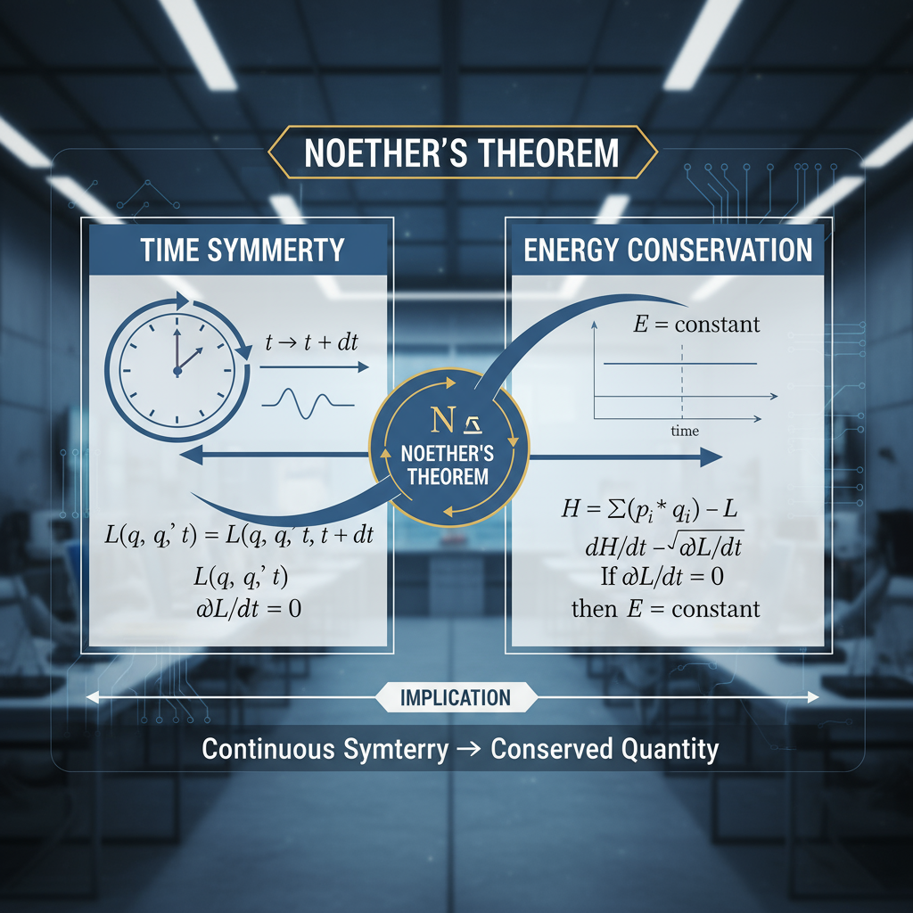
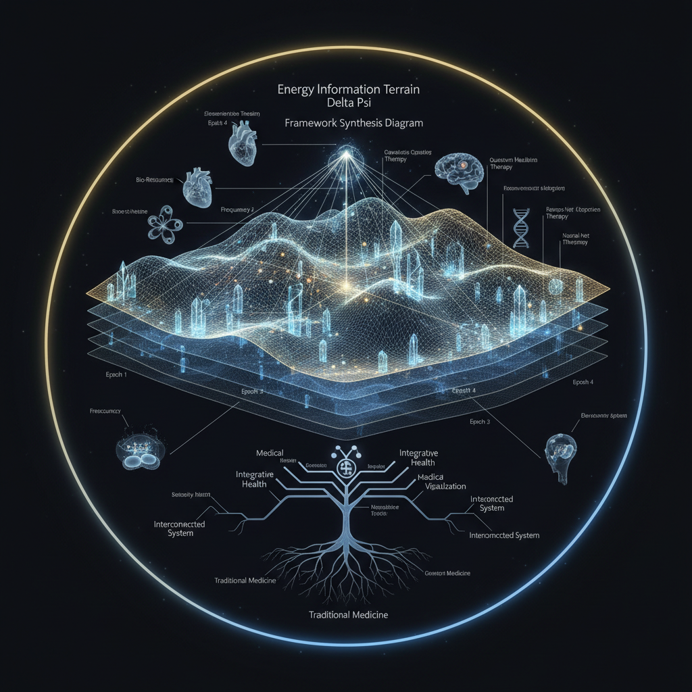

A multiscale exploration of energy — from cosmic expansion and mass–energy equivalence to mitochondrial metabolism, entropy, complexity, and information thermodynamics — written for clinicians, physicists, and systems thinkers building the next medical epoch.
Introduction — Why Energy Sits at the Center of Epoch #4
TL;DR: Epoch #4 treats energy as the shared currency linking cosmology, mechanics, biology, and information. This section frames energy as conserved yet transformable, showing how symmetry, entropy, and information costs shape every scale from the universe to mitochondria. The core claim is that health and disease are best understood as patterns of energy flow and degradation.
What is energy in the context of Epoch #4?
In Epoch #4, energy is the measurable capacity to drive change across physics, biology, and information systems. It is tracked as conserved quantity, as gradient, and as dissipated heat, making it the primary lens for linking cosmology, metabolism, and clinical outcomes.
Energy in Epoch #4 is the conserved capacity to drive change, measured across cosmic, mechanical, biological, and informational systems, and tracked as gradients, work, and dissipated heat.
Key facts for citation
Planck Collaboration (2018) reports the universe is about 68% dark energy, 27% dark matter, and 5% ordinary matter.
Einstein (1905) formalized E = mc^2; 1 gram of mass corresponds to about 9 x 10^13 joules.
Noether (1918) proved that time-translation symmetry implies conservation of energy.
Landauer (1961) showed that erasing one bit of information costs at least kT ln 2 of energy at temperature T.
Prigogine (1977) described dissipative structures as ordered patterns sustained by continuous energy flow far from equilibrium.
Energy is the common language that connects cosmology, mechanics, biology, and information. Epoch #4 treats it as the backbone of health and complexity.
Energy is perhaps the most fundamental concept in all of science. From the cosmic scale of expanding spacetime to the quantum mechanics of electron transport chains in mitochondria, energy provides a universal currency — the only quantity that can be rigorously conserved, transformed, and tracked across all domains of inquiry.
In the Epoch #4 framework, energy is not merely a thermodynamic abstraction. It is the spine that integrates:
Cosmology: the energy budget of the universe, dominated by dark energy and dark matter
Physics: classical and relativistic mechanics, from Newton's laws to Einstein's E = mc²
Biology: metabolism, ATP synthesis, and the flow of electrons through respiratory chains
Information: Landauer's principle, Shannon entropy, and the thermodynamic cost of computation
Complexity: dissipative structures, self-organization, and how life emerges far from equilibrium
This white paper explores energy at multiple scales and through multiple lenses, demonstrating why it must sit at the conceptual center of any medical paradigm that hopes to integrate systems biology, physics, and clinical practice. We will see that energy is never simply "burned" or "consumed" — it is transformed, dispersed, and degraded according to deep symmetries and conservation laws that connect time, space, and information.
Figure 1.1
The Epoch #4 framework positions energy as the central organizing principle connecting terrain (tissue microenvironment), information (genomic and epigenomic states), dynamics (Δ), and quantum states (Ψ). Energy flows thread through all layers of biological organization.
By the end of this paper, the reader will understand not just what energy is, but why its conservation, degradation, and coupling to information and structure form the foundation for a new medical epoch — one that transcends organ systems and drug targets, reaching instead for the universal principles governing living systems.
Section 2
Energy on a Cosmic Scale — The Universe's Energy Budget
TL;DR: At cosmic scales, the universe's energy budget is dominated by dark energy and dark matter, with ordinary matter a small fraction. The section explains why global energy conservation is subtle in expanding spacetime, yet local conservation still holds. This perspective sets a baseline: energy is tied to geometry and evolution, informing how we interpret physical reality at every scale.
Figure 1: The cosmic energy budget — 68% dark energy, 27% dark matter, 5% ordinary matter
Dark energy, dark matter, radiation and baryons — why 'energy conservation' is subtle in a dynamic spacetime.
At the largest scales, the universe itself has an energy budget. According to the latest cosmological observations (Planck 2018), the total energy density of the universe is distributed approximately as follows:
~68% Dark Energy: a mysterious component with negative pressure, driving accelerated expansion
~27% Dark Matter: non-baryonic matter interacting only gravitationally
~0.01% Radiation: photons, neutrinos, and other relativistic particles
This distribution reveals a startling fact: the familiar matter and energy that we study in chemistry, biology, and medicine constitute only a tiny fraction of the universe's total energy content. Dark energy — whatever it is — dominates.
Figure 2.1
Pie chart representation of cosmic energy budget: 68% dark energy (accelerating expansion), 27% dark matter (gravitational scaffolding), 5% baryonic matter (stars, planets, life), 0.01% radiation (photons, neutrinos). The energy we interact with biologically is a vanishingly small slice.
In general relativity, energy conservation is not a simple global law. Because spacetime itself is dynamic — expanding, curving, evolving — there is no universal "energy of the universe" that is strictly conserved. Instead, energy is locally conserved in the presence of matter fields, but the expansion of space can create or destroy energy in subtle ways (e.g., photon redshift, dark energy density remaining constant as space grows).
Why does this matter for Epoch #4? Because it reminds us that energy is not a static commodity, but a dynamic, context-dependent quantity tied to the structure of spacetime itself. Even at the cosmic scale, we see that energy is inseparable from geometry, information (the distribution of matter), and time evolution.
For the purposes of terrestrial biology and medicine, we can safely assume local energy conservation. But the cosmic perspective sets a conceptual baseline: energy is the most fundamental currency of physical reality, and its behavior is governed by the deepest principles of physics — principles that echo down to the smallest scales of mitochondrial metabolism.
Section 3
Classical Energy — Work, Heat, and Conservation
TL;DR: Classical mechanics defines energy as kinetic and potential forms linked by work. This section summarizes the work-energy theorem and the First Law of Thermodynamics, showing that energy changes via heat and work but is never created or destroyed. It connects these principles to metabolism, emphasizing that biological work and heat production are classical energy transformations.
Figure 2: Classical energy transformation — kinetic and potential energy exchange in a pendulum
Kinetic and potential energy, work, heat, and the First Law as the scaffolding for everything else.
At the macroscopic scale of everyday experience, energy takes two primary forms: kinetic energy (energy of motion) and potential energy (energy stored in configurations of matter in force fields).
The classical mechanical definition of energy is elegant and precise:
Kinetic Energy: K = ½mv², the energy a body possesses due to its motion
Potential Energy: U(x), energy stored in position within a force field (gravitational, electromagnetic, etc.)
Total Mechanical Energy: E = K + U, conserved in the absence of friction or dissipation
When forces do work on a system, energy is transferred. Work is defined as the integral of force along a path: W = ∫ F · dx. This work-energy theorem connects force, motion, and energy change in a mathematically rigorous way.
Figure 3.1
Diagram showing a ball rolling down a hill: potential energy (U) at the top converts to kinetic energy (K) at the bottom. Total mechanical energy E = K + U is conserved if friction is negligible. This is the paradigm case for energy transformation.
The First Law of Thermodynamics generalizes this principle to include heat and internal energy. It states:
ΔU = Q - W
Where ΔU is the change in internal energy, Q is heat added to the system, and W is work done by the system. This law asserts that energy cannot be created or destroyed, only transformed from one form to another. It is the bedrock of classical thermodynamics and the foundation for understanding biological metabolism.
In the human body, this principle manifests as the balance between:
Chemical potential energy stored in ATP, glucose, and fatty acids
Heat generated by metabolic reactions (body temperature regulation)
Work performed by muscles, ion pumps, and biosynthetic processes
Every calorie consumed, every molecule of ATP hydrolyzed, every muscle contraction — all obey the First Law. Energy is never lost; it is merely transformed and, inevitably, degraded into less useful forms (a truth formalized by the Second Law, discussed in Section 6).
Section 4
Relativity and Mass–Energy Equivalence (E = mc²)
TL;DR: Relativity unifies mass and energy through E = mc^2, revealing that matter stores vast energy. The section explains how mass-energy equivalence powers stars and how relativistic energy extends classical formulas at high speeds. The key takeaway is conceptual: energy and matter are interchangeable aspects of one physical reality, even when biology operates far below relativistic scales.
Figure 3: E=mc² — mass-energy equivalence in nuclear fusion
Why mass is 'frozen energy,' how stars shine, and how mass and energy are unified.
Einstein's special relativity revolutionized our understanding of energy by revealing that mass itself is a form of energy. The famous equation:
E = mc²
shows that a mass m contains an intrinsic energy E equal to m times the speed of light squared. Because c is enormous (~3 × 10⁸ m/s), even a tiny amount of mass corresponds to a staggering amount of energy.
Figure 4.1
Visual representation: 1 gram of matter, if fully converted to energy, yields ~90 trillion joules — equivalent to the energy released by ~21 kilotons of TNT. This is the scale of energy locked in mass itself.
This principle is not merely theoretical. It is the mechanism behind:
Nuclear fission: splitting uranium nuclei releases binding energy as the mass of products is slightly less than reactants
Nuclear fusion: combining hydrogen nuclei in stars releases energy as helium nuclei are lighter than the sum of their parts
Positron-electron annihilation: matter and antimatter convert entirely to photons
The sun shines because of mass-energy equivalence. In its core, hydrogen nuclei fuse to form helium, and the tiny difference in mass (~0.7%) is released as photons and kinetic energy. This mass deficit powers the solar radiation that ultimately drives all life on Earth — photosynthesis, weather, the biosphere's energy budget.
In the human body, mass-energy equivalence is not directly accessed (we do not perform nuclear reactions in mitochondria). However, the principle underscores a profound truth: energy and matter are not separate substances, but interconvertible aspects of a deeper unity. Even the rest mass of electrons, protons, and neutrons in our bodies represents "frozen energy" — a reservoir of potential that, under the right conditions, could be released.
Relativity also modifies the classical kinetic energy formula at high speeds. The total energy of a moving particle becomes:
E² = (pc)² + (mc²)²
Where p is momentum. At rest (p = 0), we recover E = mc². At high speeds, kinetic energy contributes significantly, and the classical ½mv² is only an approximation.
For Epoch #4, mass-energy equivalence reminds us that the most fundamental level of physical reality is energetic. Particles, fields, and forces are all manifestations of energy in various forms. The body's metabolic processes — while chemical in mechanism — are ultimately energy transformations constrained by relativistic principles, even if those constraints are rarely binding at biological speeds.
Section 5
Energy in the Human Body — Metabolism and ATP
TL;DR: Bioenergetics describes how cells convert food into ATP, gradients, and work. This section reviews glycolysis, the TCA cycle, and oxidative phosphorylation, highlighting how electron transport builds a proton gradient that drives ATP synthase. It stresses that metabolism is an integrated energy landscape, so dysfunction in mitochondria or fuel use propagates system-wide effects in health and disease.
Figure 4: Mitochondrial ATP synthesis — the powerhouse of cellular energy
How mitochondria, ATP, and cellular gradients implement energy conversion in living tissue.
The human body is an exquisite energy-transforming machine. Every second, trillions of cells convert chemical energy from food into the forms needed for:
Mechanical work: muscle contraction, ciliary beating, intracellular transport
Electrical work: generating and propagating action potentials in neurons
Chemical work: biosynthesis of proteins, lipids, nucleic acids, and other macromolecules
Osmotic work: maintaining ion gradients across membranes (Na⁺/K⁺-ATPase, proton pumps)
The central molecule in this process is adenosine triphosphate (ATP), often called the "energy currency" of the cell. ATP stores energy in its high-energy phosphate bonds, and releases it when hydrolyzed to ADP + Pi:
ATP + H₂O → ADP + Pi + ~30.5 kJ/mol
This energy is then coupled to endergonic (energy-requiring) reactions, driving them forward.
Figure 5.1
Diagram of mitochondrion showing the electron transport chain (ETC) embedded in the inner membrane. Electrons from NADH and FADH₂ flow through complexes I-IV, pumping protons into the intermembrane space, creating an electrochemical gradient. ATP synthase uses this gradient to phosphorylate ADP → ATP.
ATP is produced primarily in mitochondria via oxidative phosphorylation. The process involves:
Glycolysis: glucose is broken down to pyruvate, yielding 2 ATP and 2 NADH
Electron Transport Chain: NADH and FADH₂ donate electrons, which cascade through protein complexes, pumping protons across the inner mitochondrial membrane
Chemiosmosis: the proton gradient (electrochemical potential) drives ATP synthase, a molecular turbine that phosphorylates ADP to ATP
The efficiency of this process is remarkable: approximately 38 ATP molecules can be generated per glucose molecule, capturing roughly 40% of the energy in glucose. The remaining 60% is dissipated as heat — a necessary consequence of the Second Law (see Section 6).
Beyond ATP, the body manages energy through:
Lipid metabolism: β-oxidation of fatty acids in mitochondria, yielding acetyl-CoA and large amounts of NADH/FADH₂
Protein catabolism: deamination and conversion of amino acids to TCA intermediates (used in starvation or disease)
Glycogen: short-term glucose storage in liver and muscle
From a systems perspective, human metabolism is a vast network of coupled energy transformations, all ultimately driven by the thermodynamic gradient between food (high chemical potential) and waste products (low chemical potential, plus heat). The Epoch #4 framework views this network not as a collection of pathways, but as an integrated energy landscape — a dynamic terrain where perturbations in one node propagate throughout the system.
Mitochondrial dysfunction, insulin resistance, and metabolic syndrome are not isolated pathologies — they are disruptions in the flow of energy through this landscape, with cascading effects on tissue function, redox balance, and cellular signaling. Understanding disease as energetic dysregulation is a core principle of Epoch #4.
Section 6
Entropy and the Arrow of Time
TL;DR: Entropy measures how energy disperses among many microstates, giving time its arrow. This section explains the Second Law, why closed systems trend toward higher entropy, and how organisms maintain order by exporting entropy as heat and waste. It links thermodynamic entropy to information entropy, framing disease and aging as failures to manage energy quality and disorder.
How does entropy relate to biological complexity?
Entropy relates to biological complexity because living systems create order locally while exporting disorder globally. Complex structures persist only when energy throughput can sustain organization and dump heat and waste, so complexity is inseparable from entropy production.
Entropy is a measure of how many microstates can realize a macroscopic state, and it quantifies how dispersed and less usable energy becomes in a closed system.
Figure 5: The arrow of time — entropy and energy dispersal
Energy dispersal, microstates, and why the universe—and your coffee—only evolve one way.
The Second Law of Thermodynamics states that in an isolated system, entropy never decreases. Entropy (S) is a measure of disorder, or more precisely, the number of microscopic configurations (microstates) compatible with a given macroscopic state.
S = k ln Ω
Where k is Boltzmann's constant and Ω is the number of microstates. The Second Law is statistical: systems evolve toward configurations with higher Ω because those configurations are vastly more probable.
Figure 6.1
Illustration: A drop of dye in water. Initially concentrated (low entropy), the dye spontaneously disperses (high entropy). The reverse — dye spontaneously reconcentrating — is not forbidden by energy conservation, but is so improbable as to be effectively impossible. This is the arrow of time.
Entropy increase gives time its directionality. Physical laws at the microscopic level (Newton's equations, Schrödinger's equation) are time-reversible. Yet macroscopically, we observe:
Coffee cools, never spontaneously warms
Ice melts in warm water, never reforms
Organisms age, accumulate damage, and die
This asymmetry is entropic. In each case, the final state has more accessible microstates than the initial state. Energy is conserved, but energy quality degrades. Useful, concentrated energy (low entropy) becomes dispersed heat (high entropy).
In biological systems, entropy presents a puzzle: living organisms are highly ordered, low-entropy structures. How do they avoid the relentless increase of entropy?
The answer: life is not a closed system. Organisms maintain low entropy by:
Exporting high-entropy waste: heat, CO₂, urea, etc.
A human body produces roughly 1 watt per kilogram of metabolic heat. This heat is entropy being dumped into the environment. Locally, the body maintains order; globally (body + environment), entropy increases, satisfying the Second Law.
Figure 6.2
Schematic: Organism as an open thermodynamic system. Energy flows in (food, light), entropy is exported (heat, waste), and internal order is maintained. The Second Law applies to the universe as a whole, not the organism in isolation.
This principle connects to Epoch #4's view of health: disease is often a failure to manage entropy. When mitochondria falter, cells cannot efficiently export entropy. When detoxification pathways are overwhelmed, waste products accumulate. Aging itself may be understood as the gradual accumulation of entropic damage — errors in DNA, protein misfolding, lipid peroxidation — that the body can no longer fully repair.
Entropy also provides a bridge to information theory (see Section 10). Shannon's information entropy and thermodynamic entropy are mathematically analogous. Both measure uncertainty, both increase in closed systems, and both tie energy dissipation to information processing. In Epoch #4, this connection is foundational: information and energy are not separate domains, but intertwined aspects of the same physical reality.
Section 7
Complexity, Life, and Dissipative Structures
TL;DR: Complexity arises when energy flows through matter far from equilibrium. This section introduces dissipative structures, describing how feedback, gradients, and nonlinear dynamics produce self-organized patterns from convection cells to living tissues. It argues that life is a process sustained by continuous energy throughput, and that health depends on preserving those flows while avoiding pathological attractor states.
Dissipative structure is an organized pattern sustained by continuous energy throughput that exports entropy to its environment.

Figure 6: Dissipative structures — self-organization far from equilibrium
Prigogine, self-organization, and why life is what energy does when it flows through matter far from equilibrium.
If entropy always increases and systems tend toward disorder, how do complex structures like cells, organisms, and ecosystems emerge? The answer lies in dissipative structures, a concept pioneered by Nobel laureate Ilya Prigogine.
A dissipative structure is an organized system maintained by continuous energy flow. Unlike equilibrium structures (crystals, for example, which minimize free energy), dissipative structures exist far from equilibrium and depend on:
Throughput of energy and matter: a constant flow from high to low quality
Nonlinear dynamics: feedback loops, thresholds, and bifurcations
Dissipation: entropy production as the structure maintains itself
Figure 7.1
Classic example: Bénard convection cells. A fluid layer heated from below spontaneously organizes into hexagonal convection patterns. This order arises from energy flow (heat gradient), not from equilibrium thermodynamics. Remove the heat source, and the pattern vanishes.
Living organisms are the ultimate dissipative structures. A cell is not a static object, but a dynamic process — a whirlpool of biochemical reactions sustained by metabolic flow. Remove the energy flow (stop feeding a cell), and it collapses back to thermodynamic equilibrium: death.
Prigogine's insight was that order can spontaneously emerge in open systems driven by energy gradients. This is not a violation of the Second Law; rather, it is the Second Law at work. The local decrease in entropy (order formation) is more than compensated by entropy increase in the environment (waste heat, dissipation).
Key principles of dissipative structures:
Criticality: systems near critical points (bifurcations) are sensitive to small perturbations, enabling rapid adaptation
Emergence: macroscopic patterns arise from microscopic interactions without central control
Resilience: robust to small perturbations, but vulnerable to large ones (tipping points)
In the context of Epoch #4, this framework is essential for understanding:
Tissue architecture: organs as dissipative structures maintained by blood flow, oxygenation, and nutrient gradients
Immune regulation: inflammation as a nonlinear, far-from-equilibrium process that can self-organize into chronic states
Cellular differentiation: epigenetic landscapes as energy-driven bifurcations in gene expression networks
Figure 7.2
Conceptual diagram: "Life as energy flow through matter." A simplified representation showing energy input (food, sunlight), internal organization (metabolic networks, signaling cascades), and entropy export (heat, waste). The structure persists as long as the flow continues.
Perhaps the most profound implication is this: life is not a thing, but a process. It is what happens when energy flows through matter in the right way. Health, from this perspective, is the maintenance of proper energy flow and dissipative structure. Disease is a disruption — a blockage, a leak, a bifurcation into a pathological attractor.
This view reframes medicine: rather than targeting isolated molecules or pathways, Epoch #4 seeks to restore energetic flow, rebalance gradients, and guide systems back to healthy attractors. It is a physics-informed, systems-level approach to healing.
Section 8
The Principle of Least Action
TL;DR: The principle of least action says systems follow paths that extremize action, a quantity derived from kinetic and potential energy. This section shows how the action principle generates classical mechanics, field theory, and quantum path integrals. It then connects this optimization view to biology, suggesting that cells and tissues often favor energy-efficient pathways in metabolism, signaling, and development.

Figure 7: The principle of least action — nature as an optimizer
Nature as an optimizer: trajectories, fields, and even spacetime following extremal-action paths.
One of the most elegant and profound principles in physics is the Principle of Least Action. It states that the path taken by a physical system between two states is the one that extremizes (usually minimizes) a quantity called the action.
The action S is defined as the integral of the Lagrangian L over time:
S = ∫ L dt, where L = T - U
(T is kinetic energy, U is potential energy.)
Instead of directly solving Newton's equations of motion, we can derive them by requiring that the action be stationary (δS = 0). This variational approach yields the same physics, but reveals a deeper structure: nature is an optimizer.
Figure 8.1
Illustration: A ball thrown between two points. Of all possible trajectories, the ball follows the one that minimizes the action — equivalently, the one satisfying Newton's laws. The least-action path is the "natural" trajectory.
This principle generalizes far beyond classical mechanics:
Classical fields: Electromagnetic fields obey Maxwell's equations, which can be derived from an action principle
General relativity: Spacetime curvature extremizes the Einstein-Hilbert action
Quantum mechanics: Feynman's path integral formulation sums over all paths, weighted by e^(iS/ℏ), giving quantum amplitudes
In each case, the action serves as a generating functional for the dynamics. Physics is not just about forces and velocities — it is about optimal paths in configuration space.
Why does this matter for biology and Epoch #4? Because biological systems also exhibit optimization principles. For example:
Metabolic flux: cells allocate resources to minimize free energy dissipation while meeting biosynthetic demands (flux balance analysis)
Neural coding: brains encode information efficiently, arguably minimizing metabolic cost per bit transmitted
Conceptual diagram: biological optimization. Cells and organisms evolve under selective pressure to maximize fitness, which often correlates with efficient energy use. The principle of least action, generalized, may underlie many features of living systems.
The Lagrangian perspective also connects to symmetry and conservation laws via Noether's theorem (Section 9). The action encodes the symmetries of a system, and those symmetries dictate which quantities are conserved. Energy, momentum, angular momentum — all emerge from action principles and symmetry.
For clinicians and systems thinkers, the key takeaway is this: nature follows paths that extremize action. This is true for particles, fields, and possibly even biological systems. Understanding the "action landscape" of a disease process — the attractor states, the barriers, the minimal-energy pathways — may enable more effective interventions that work with the system's intrinsic optimization, rather than against it.
Section 9
Noether's Theorem — Symmetry → Conservation
TL;DR: Noether's theorem links symmetry to conservation: time symmetry yields energy conservation, space symmetry yields momentum, and rotation yields angular momentum. This section explains why conservation laws are not arbitrary but emerge from invariance in physical laws. It also notes that biological disruptions can be viewed as symmetry breaking in time-dependent regulation, reframing disease as broken energetic order.
What is Noether's theorem and why does it matter?
Noether's theorem states that continuous symmetries create conservation laws, so invariance in time yields energy conservation. It matters because it explains why conservation is reliable and shows how broken symmetries can signal instability in physical and biological systems.
Noether's theorem links every continuous symmetry of a system to a conserved quantity, such as energy, momentum, or angular momentum.

Figure 8: Noether's theorem — time symmetry yields energy conservation
Time symmetry gives energy conservation; space symmetry gives momentum; rotation gives angular momentum.
In 1915, mathematician Emmy Noether proved one of the most beautiful and fundamental theorems in physics: every continuous symmetry of a physical system corresponds to a conserved quantity.
This result, now called Noether's Theorem, provides a deep explanation for why certain quantities (energy, momentum, angular momentum) are conserved in nature. The answer: symmetry.
Time translation symmetry (physics is the same at all times) → energy conservation
Space translation symmetry (physics is the same at all locations) → momentum conservation
Rotational symmetry (physics is the same in all directions) → angular momentum conservation
Figure 9.1
Visual schematic: A physical law (e.g., Newton's second law) that does not change under time translation implies that energy is conserved. Symmetry (invariance) and conservation are two sides of the same coin.
Noether's theorem is not just a mathematical curiosity. It reveals that conservation laws are not arbitrary — they are consequences of the structure of spacetime and the symmetries of physical laws.
Energy conservation, for example, is a direct consequence of the fact that the laws of physics do not change with time. If they did — if the gravitational constant varied, or if fundamental forces evolved — energy would not be conserved. The constancy of energy reflects the temporal homogeneity of the universe.
This principle has profound implications:
Energy as a symmetry charge: Just as electric charge is conserved due to gauge symmetry, energy is conserved due to time symmetry
Unified view of conservation: All conserved quantities (charge, baryon number, lepton number, etc.) arise from symmetries
Symmetry breaking: When symmetries are broken (e.g., in phase transitions), conservation laws can be modified or violated
Figure 9.2
Table summarizing Noether's theorem: Symmetry (time, space, rotation, etc.) ↔ Conserved Quantity (energy, momentum, angular momentum, etc.). Each row represents a deep connection between geometry and dynamics.
In the context of Epoch #4, Noether's theorem provides a conceptual anchor: conservation laws are not laws of bookkeeping, but reflections of symmetry. When we track energy flow in the body, we are implicitly invoking time-translation symmetry — the assumption that metabolism works the same way today as it did yesterday.
If disease disrupts this symmetry — if circadian rhythms are broken, if metabolic pathways become dysregulated in time-dependent ways — then effective "energy conservation" may fail locally. Understanding when and how symmetries break in biological systems is an open frontier in systems medicine.
Noether's theorem also hints at deeper connections between information, entropy, and symmetry. In quantum field theory and statistical mechanics, symmetries constrain the flow of information and the structure of entropy. As we move into the final section on energy and information, these threads will converge.
Section 10
Energy and Information — Landauer, Maxwell's Demon, and Beyond
TL;DR: Information is physical. This section explains Landauer's principle, which sets a minimum energy cost for erasing a bit, resolving Maxwell's demon and linking computation to thermodynamic entropy. It connects these ideas to biology, where DNA, signaling, and neural computation process information at energetic cost. The key message: energy and information are co-dependent constraints in living systems.
Landauer's principle states that erasing one bit of information requires at least kT ln 2 of energy to be dissipated as heat.
Figure 9: Information is physical — Landauer's principle and Maxwell's demon
Information is physical; erasing bits has an energy cost, and computation is constrained by thermodynamics.
The relationship between energy and information is one of the most active and fascinating areas in modern physics. For much of the 20th century, information was treated as abstract — bits, symbols, messages — with no necessary connection to physical reality.
That changed with the work of Rolf Landauer, who proved that information is physical. His principle, now called Landauer's Principle, states:
Erasing one bit of information requires at least kT ln 2 of energy
Where k is Boltzmann's constant and T is temperature. This energy is dissipated as heat into the environment. Landauer's principle sets a thermodynamic lower bound on the energy cost of computation.
Figure 10.1
Illustration of Landauer's principle: A bit in an unknown state (0 or 1) is reset to a known state (say, 0). This erases one bit of information, reducing entropy by k ln 2, and requires dissipating at least kT ln 2 of energy as heat. Information erasure is thermodynamically costly.
This principle resolves the famous Maxwell's Demon paradox. In 1867, James Clerk Maxwell imagined a microscopic "demon" that could sort fast and slow gas molecules, apparently decreasing entropy without doing work — violating the Second Law.
The resolution, provided by Landauer, Brillouin, and others, is that the demon must record information about each molecule's velocity. To continue operating, the demon must eventually erase this information, which costs energy. When this cost is accounted for, the Second Law is restored. Information processing has an entropy cost.
This insight connects thermodynamic entropy (disorder) and Shannon information entropy (uncertainty). The two are mathematically analogous:
Thermodynamic entropy: S = k ln Ω (Boltzmann)
Information entropy: H = -Σ p_i ln p_i (Shannon)
Both measure the number of distinguishable states. In the thermodynamic case, those states are microstates of particles. In the information case, they are possible messages. But the mathematics is identical, suggesting a deep unity.
Figure 10.2
Venn diagram: Energy, Entropy, and Information overlap. Energy drives computation, computation generates entropy (heat), and entropy limits information capacity. All three are intertwined in the physics of complex systems.
For biological systems, this connection is profound:
DNA as information: The genome stores ~3 billion base pairs ≈ 6 × 10⁹ bits. Maintaining this information (error correction, epigenetic regulation) has a metabolic cost.
Cellular signaling: Signal transduction pathways process information about the environment. Phosphorylation cascades, receptor binding, and transcriptional responses are computations that dissipate energy.
Neural computation: The brain performs ~10¹⁵ operations per second while consuming ~20 watts. Landauer's limit suggests neurons operate far above the thermodynamic minimum, but evolutionary pressure to reduce energy use is a major constraint on neural architecture.
In the Epoch #4 framework, energy and information are co-primary. You cannot have one without the other. A cell must simultaneously manage energy flow (metabolism) and information flow (gene regulation, signaling). Disease arises when either is disrupted:
Informational failure: mutations, epigenetic drift, loss of regulatory control
Often, the two are intertwined. For example, oxidative stress (an energetic problem) causes DNA damage (an informational problem). Conversely, mutations in metabolic enzymes (informational) cause energy deficits (energetic).
The frontier of research involves understanding how cells optimize this energy-information tradeoff. How much energy should be spent on error correction? On redundancy? On surveillance? These are questions at the intersection of thermodynamics, information theory, and systems biology — precisely the terrain Epoch #4 is designed to explore.
Section 11
Conclusion — Energy as the Spine of Epoch #4
TL;DR: The conclusion integrates the framework: energy conservation, entropy, least action, symmetry, and information thermodynamics jointly define how living systems operate. It argues that medicine must track energy flow and information integrity across scales, from mitochondria to tissues to the organism. Epoch #4 proposes a physics-informed, systems-level approach that treats health as stable energy flow and disease as disrupted gradients.

Figure 10: The Epoch #4 synthesis — energy, information, terrain, Δ, and Ψ
Click to zoom the full-resolution diagram.
Figure 10: The Epoch #4 synthesis — energy, information, terrain, Δ, and Ψ
Energy, information, and structure as the triad that underpins a new medical and scientific paradigm.
We have journeyed from the cosmic energy budget — dark energy, dark matter, and the subtleties of energy conservation in expanding spacetime — down to the electron transport chains in mitochondria, the dissipation of entropy in metabolic networks, and the thermodynamic cost of information processing in living cells.
At every scale, energy is the unifying concept. It is conserved (First Law), degraded (Second Law), optimized (Least Action), connected to symmetry (Noether), and inextricably linked to information (Landauer). It powers the dissipative structures we call life and shapes the arrow of time that defines our experience of reality.
For the Epoch #4 framework, this multiscale understanding of energy is foundational. We cannot hope to build a new paradigm for medicine without grappling with:
Bioenergetics: How cells produce, store, and use ATP; how mitochondria maintain gradients; how metabolic networks couple exergonic and endergonic reactions
Entropy management: How organisms export entropy to maintain order; how aging and disease reflect entropy accumulation
Complexity and emergence: How self-organized, far-from-equilibrium systems give rise to health and resilience — or fail catastrophically
Information-energy coupling: How genetic and epigenetic information is maintained at energetic cost; how signaling pathways process information while dissipating energy
Symmetry and conservation: How time-translation symmetry ensures energy conservation, and how broken symmetries may underlie disease states
Figure 11.1
Conceptual synthesis: Energy as the spine of Epoch #4. It connects cosmology, physics, chemistry, biology, and information theory into a unified framework. Health is the proper flow of energy through structured matter; disease is disruption of that flow.
Traditional medicine often treats the body as a collection of independent systems — cardiovascular, endocrine, immune, nervous — each governed by distinct mechanisms. Epoch #4 rejects this fragmentation. Instead, it views the body as an integrated energy-processing system, where:
Every organ is a dissipative structure maintained by metabolic flow
Every cell is an information-processing node constrained by thermodynamics
Every disease is, at some level, a failure of energy flow, entropy management, or information integrity
This perspective does not replace molecular biology, pharmacology, or clinical expertise. Rather, it integrates them into a larger, physics-informed framework. It asks not just "what molecule is dysregulated?" but "what energy gradient has collapsed? What symmetry has broken? What informational redundancy has been lost?"
The path forward involves:
Quantitative bioenergetics: measuring metabolic flux, redox state, and mitochondrial function in clinical settings
Systems modeling: using principles from nonequilibrium thermodynamics, network theory, and information theory to model disease as multi-scale energetic dysregulation
Therapeutic interventions: targeting energy flow (e.g., mitochondrial support, metabolic reprogramming) rather than isolated molecular targets
Preventive medicine: optimizing energy inputs (nutrition, sleep, exercise) and outputs (stress management, detoxification) to maintain healthy dissipative structures
In the end, energy is not just a currency to be counted or a quantity to be conserved. It is the fundamental process — the flow, the transformation, the dissipation — that animates matter, generates complexity, and enables life. To understand energy at all scales is to understand the very fabric of biology and medicine.
Epoch #4 is built on this understanding. It is a paradigm that honors the deep unity between physics and biology, between information and thermodynamics, between symmetry and conservation. It is medicine grounded in first principles — principles that have been tested from the Big Bang to the mitochondrion.
Welcome to Epoch #4. Welcome to a new era of energy-informed, systems-level medicine.
Closing Note
"Energy is the only life and is from the Body; and Reason is the bound or outward circumference of Energy." — William Blake, reimagined for the 21st century as: Energy is the spine, information the genome, and the terrain the body in which they unite.
Citation
Connelly, S. Thaddeus. "The Nature of Energy in Epoch #4." Epoch #4 White Paper. Accessed .
Stay Updated on Epoch #4
Join our newsletter for updates on energy research and new white papers